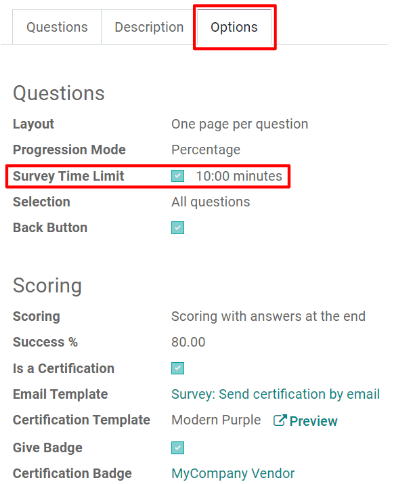
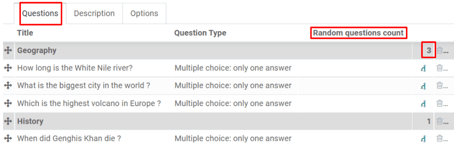

Preguntas cronometradas y aleatorias¶
Al crear una encuesta en Odoo, hay opciones que le permiten establecer un tiempo límite en la encuesta y mostrar las preguntas aleatoriamente.
Tiempo límite¶
Durante una encuesta con tiempo límite, los participantes deben terminarla dentro de un periodo de tiempo establecido. Un caso de uso muy común en el que se usa el tiempo límite es para reducir la probabilidad de que el participante busque las respuestas en otro lado (por ejemplo, en internet), y establce la encuesta como un ambiente de prueba a «libro cerrado».
Busque la opción Tiempo límite de la encuesta en la pestaña de Opciones del formulario de la encuesta, en la sección de Preguntas.
Cuando selecciona la opción Tiempo límite de la encuesta, aparecerá un cronómetro en cada página de la encuesta, permitiendole a los participantes estar atentos al tiempo restante mientras la encuesta está activa.
Nota
A los participantes que no suban su encuesta en el tiempo límite preesablecido no se les guardarán sus respuestas.
Aleatorio por sección¶
Cuando una encuesta es aleatoria, Odoo mezcla las preguntas y las muestra en un orden aleatorio cada vez que un participante comienza a responder las preguntas. Utilizar este método no le permite a los participantes comparar sus respuestas entre ellos y ayuda a darle control para pruebas individuales.
Para hacer aleatoria una encuesta, haga clic en la pestaña de Opciones en el formulario de la encuesta. En la sección de Preguntas, seleccione Aleatorio por sección para el campo de Selección de preguntas. Después de activarla, vaya a la pestaña de Preguntas y busque la columna Número de preguntas aleatorias. A partir de ahí, establezca cuántas preguntas (por sección) debe seleccionar y mostrar Odoo durante la mezcla de preguntas.
Ver también